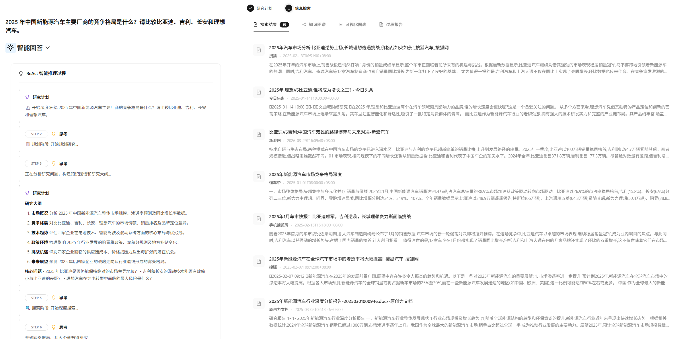
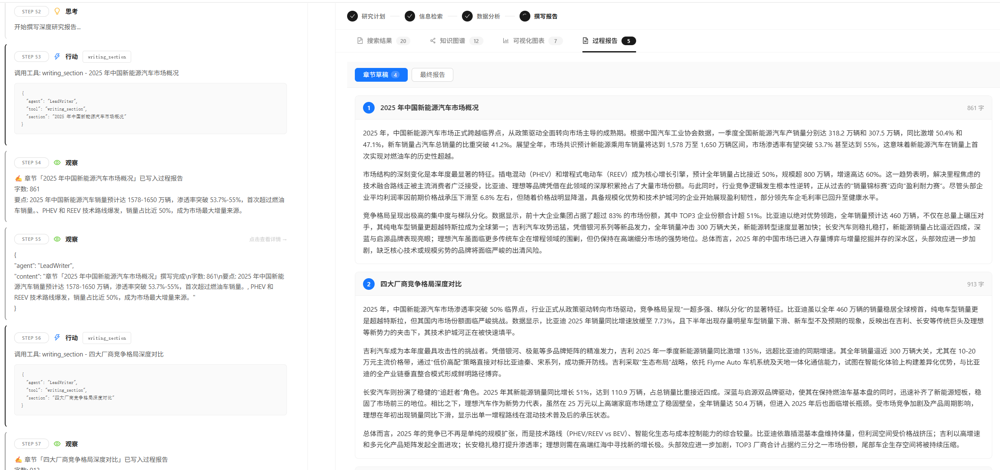
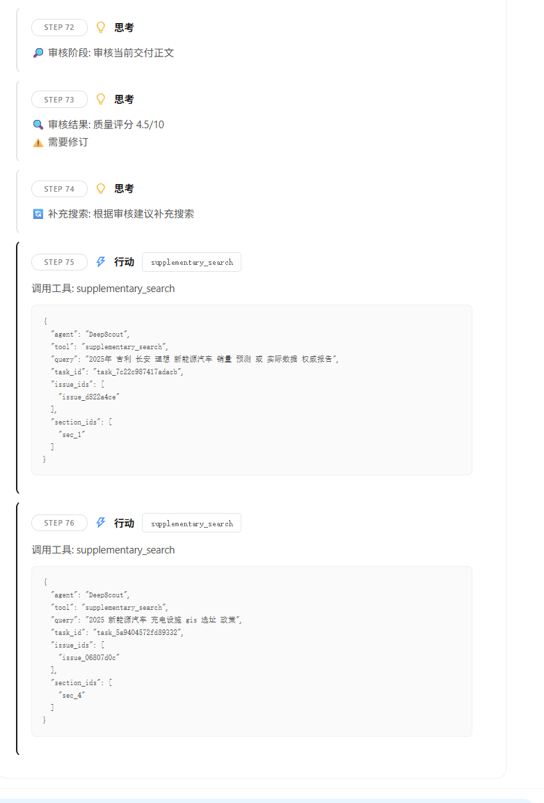

长安汽车位列第三，市场份额为6.9%。
竞争格局 · 报告原文
AI PRODUCT MANAGER / CASE STUDY
多 Agent 智能行业研究系统
面向产品经理与战略分析人员，将研究规划、多源检索、证据整理、报告生成与审核修订串联成完整流程，生成附带来源及审核记录的行业研究初稿。



规划研究章节，同时查看检索资料与来源摘要。
围绕比亚迪、吉利、长安与理想汽车，系统规划六个研究章节，完成资料检索、报告生成、章节与全局审核，并根据发现的问题开展定向补搜、按章节改写和再次审核。
已完成报告生成、修订与复审，仍有待核查问题。
基于既有行业信息助手底座，围绕研究结果的可信度与修订过程的可控性，负责三项核心机制设计与迭代。
代码由 Codex 辅助实现。ITERATION / EVIDENCE TRACEABILITY
真实运行中，正文与结论清单无法保持一致，导致写作中断。我由此重新划分模型与程序的职责，把报告写作与证据关联分开完成。
最初要求模型同时生成研究正文和完整结论清单，再检查两者是否一一对应。
模型既要组织报告，又要重复输出对应结论，一致性成为交付中的脆弱环节。
这让我调整了思路：先让模型专注写作，再独立定位关键结论、选择证据，并检查引用关联。
完整正文
＋完整结论清单
组织研究表达
优先数字、日期等
找不到则保留缺口
位置、身份与合法性
产品判断模型负责表达和语义选择，程序负责文本位置、引用身份与关联合法性。
优先定位数字、日期等关键事实；找不到支持材料时，保留证据缺口，交给后续审核继续检查。
2025 年 1 月 · 新能源汽车厂商零售销量 真实报告节选
长安汽车位列第三，市场份额为6.9%。
竞争格局 · 报告原文
吉利汽车、长安汽车排名第二和第三,零售销量分别为11.76万辆,5.11万辆,市场份额分别为15.8%、6.9%。
《2025年中国新能源汽车行业竞争格局及市场份额解读(图)》
搜索摘要快照将该 Claim、Evidence 与 Source 对应起来
结构关联已核对正文位置、证据和来源能够对应
事实支持待确认能够找到来源，仍需判断证据是否充分支持结论。
ITERATION / REVIEW TO ACTION
将局部核查与全局判断拆分，再把审核意见变成可执行的问题。由问题决定补搜或改写，并通过复审确认是否真正解决。
读取旧草稿 ／ 末轮改写缺少复审 ／ 高分仍有严重问题
我先让审核对准实际交付的内容，再拆分两层职责：章节审核需要局部证据，全局审核需要完整论证，两者关注范围不同。
本章正文与关联证据
事实 · 证据 · 局部逻辑完整报告与章节审核摘要
跨章节一致性 · 整体论证 · 目标覆盖全局判断不能覆盖章节审核中仍未解决的严重问题。
即使没有正文变化，也重新确认问题
质量与成本取舍改写范围按问题收敛，复审范围仍覆盖整份报告。
这样能减少无关内容改动，也保留跨章节检查；代价是修复局部问题仍需承担全量复审成本。
没有可用新证据或修订预算耗尽时，保留待处理问题，不强行给出通过结论。
真实运行中，同一个尚未解决的问题被再次登记，旧记录仍在、新记录又出现，难以判断修复是否真正推进。
原有问题仍未解决的问题原有问题继续开放重复登记新增重复记录问题被改写、被遗漏或获得新材料，都不自动代表已经解决。
REAL RUN / AN ISSUE IN MOTION
一次真实运行中，Issue 驱动了定向补搜、章节改写和改写后复审。Writer 完成改写之后，问题是否关闭，仍由 Review 结果与合并规则决定。
SECTION REVIEW / PROBLEM
当月新能源汽车销量达94.4万辆，同比增长29%
章节审核发现，产量、销量及同比增速等关键数据缺少支持来源，因此要求针对这一证据缺口补充研究。
TARGETED RESEARCH
系统围绕缺失的产销数据来源发起定向搜索：
2025年1月 中国新能源汽车销量 产量 同比增长 数据
同比增长 29%
同比增长 29.4%
补搜获得相关产销数据，将新增材料关联到这一问题及对应章节。
材料来自第三方网站保存的搜索摘要，其中转述了中汽协数据。新增证据进入章节修订计划，为改写提供依据。
REVISION / ORIGINAL TEXT
2025年1月的数据显示，当月新能源汽车销量达94.4万辆，同比增长29%；同期产量为101.5万辆，同比增长29%。
根据中国汽车工业协会公布的数据，2025年1月，新能源汽车产销量分别完成101.5万辆和94.4万辆，同比分别增长29%和29.4%。
原 Issue 是证据缺口。补搜与改写过程中，报告补充了数据归属，并将销量同比从 29% 改为 29.4%；产量、销量及产量同比数值保持不变。
RE-REVIEW / MERGED RESULT
写作环节完成改写，只能说明已尝试处理问题，不能自行关单。随后，章节审核明确确认原问题已解决，合并审核结果后，该问题被关闭。
经复审与合并后关闭
已建立关联，支持关系仍需核查
其他问题和交付条件仍未全部解决
修订是执行动作，关闭是质量判断。
FINAL ARTIFACT / REPORT DELIVERY
围绕比亚迪、吉利、长安与理想汽车，报告涵盖市场概况、竞争格局、技术趋势、政策环境、挑战机遇与未来展望。
查看系统真实生成并完成修订的研究报告，正文保留原貌，并提供来源、证据与审核记录供查阅。
报告已完成复审，仍有待核查内容；来源为保存的搜索摘要，尚未完成独立人工事实核验。
2025年，中国新能源汽车市场已迈入主流普及的新阶段，行业普遍预测其渗透率将突破50%，标志着新能源汽车从政策驱动转向市场驱动，成为推动整体车市增长的核心引擎。根据乘联分会数据，2025年3月国内狭义乘用车零售销量达194.0万辆，同比增长14.4%。其中，新能源汽车零售量预计达100万辆，市场渗透率回升至54.1%，成为春季乘用车市场恢复的主要动力。